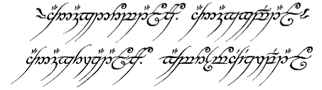

Author:
- Name: Anonymous 2004
Location: SG - Republic of Singapore (Singapore)
To build:
makeTo use:
./anonymous 'foo' > bar.pgmNow open the output using your favourite
pgm viewer. If you don’t
have a pgm viewer then we suggest the netpbm
toolkit to convert the image to a graphics
format that you can view. Most graphical web browsers can display PNG or JPEG
images.
Try:
./try.shNOTE: technically the text is supposed to be in all lower case but the script does use some upper case letters for demonstration purposes.
Judges’ remarks:
Did you know that in the first edition of The Hobbit, Gollum was willing to give up the ring? It was not the Ruling Ring, the One Ring, the Ring of Power or anything like that: it was simply a literary device that could make one invisible. When Bilbo won the famous Riddle-game Gollum went to fetch the Ring - not to kill and eat Bilbo but to give it to him! But Bilbo had already found it just like in the later editions. Gollum profusely apologised and begged for forgiveness. Bilbo told him never mind because he would have had it anyway. But he’d let him off on one condition: that he show him the way out. It was at this point that Bilbo slipped the ring on and Gollum saw him vanish and understood that he already found it. But there was no call of thief and no hatred of Bilbo. It was not until a sequel was called for that this was changed.
If you want to read the first edition they reprinted it some years back: The Hobbit Facsimile First Edition. The details are also discussed in History of
Middle-earth (HoMe) VI, The Return of the
Shadow, part one of
the history of The Lord of the
Rings of a twelve volume set - as well as in The
History of the
Hobbit.
Fun fact: at first Gollum was akin to a goblin-kind but this was immediately struck out.
p.s. Frodo lives!
An important aside :-)
BTW: if you haven’t read The Lord of the
Rings what are you waiting for? :-)
You’ll find out the source of the text above though you’ll see that there are
some circumflexes missing! That’s okay though due to I/O of the entry and in
earlier drafts sometimes the û had no diacritic but h after the u in
it (and other times nothing). The real text is:
Ash nazg durbatulûk, ash nazg gimbatul, ash nazg thrakatulûk, agh
burzum-ishi krimpatul.which when translated from Black Speech:

into the Common Tongue reads:
One Ring to rule them all, One Ring to find them,
One Ring to bring them all and in the darkness bind them.Author’s remarks:
This program takes a single command line argument, transcribes the argument text into Tolkien’s Elvish letters, and writes the transcription to standard output as a portable graymap (PGM) file.
The specific transcription mode is the Black Speech (Tengwar mode), as used in the inscription on the One Ring. The program handles the following digraphs:
gh,sh,th: the corresponding tengwar are output for these specific sounds.mhdenotes the full tengwa for[m];mby itself means a horizontal bar above the next letter.rhdenotes the[r]tengwa.uhdenotes the tehta for long vowel[u:].zhselects the up-reaching tengwa for[z], whilezselects the down-reaching one.
Punctuation marks other than commas and periods are ignored, as are whitespace characters. In addition, the argument text must be entirely in lower case.
The following command thus writes a rendering of the Ring
inscription to
the file ring.pgm:
./anonymous "ash nazg durhbatuluhk, ash nazg gimbatul, \
ash nazg thrakatuluhk, agh burzhumh-ishi krimpatul." >ring.pgmThe source code assumes the ASCII character set; also, due to space constraints, the program uses rather inefficient algorithms, so it may waste a lot of time and space even when rendering moderately long strings.
The code contains a vector font which was derived by toying with Harri Perälä’s Tengwar Cursive font. Currently, only the glyphs used in the Ring inscription are included in the font.
Inventory for 2004/anonymous
Primary files
- anonymous.c - entry source code
- Makefile - entry Makefile
- anonymous.orig.c - original source code
- One_Ring_inscription.png - image of One Ring Black Speech inscription
- try.sh - script to try entry
Secondary files
- 2004_anonymous.tar.bz2 - download entry tarball
- README.md - markdown source for this web page
- .entry.json - entry summary and manifest in JSON
- .gitignore - list of files that should not be committed under git
- .path - directory path from top level directory
- index.html - this web page


{kind=link}